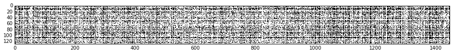

High-level Overview
There were two goals to this project: implementation of an image processing-based audio fingerprinting algorithm, derived from the techniques described in this paper (by Zafar Rafii, Bob Coover and Jinyu Han) and the use of this algorithm to determine similarity between two given input songs.
This method of audio fingerprinting differs from the algorithm behind the popular song-identification app, Shazam, in that correct identification does not hinge on a queried song sample coming from the same exact recording as a song in the database. It attempts to address the problem of song identification at a live performance, where a captured audio recording’s unique amplitudes would not correctly map onto a database reference using the Shazam method. This method instead identifies frequency patterns between sample queries and database references by thresholding their log-spectrograms according to nearby magnitudes and applying an image-processing technique to the results to determine a correct match.
The original idea was that because this method of fingerprinting relies on sound characteristics of the samples rather than unique patterns of points (as in the Shazam method), that this algorithm could then be used not only to find a “best fit” studio recording for a live query of the same song, but also to create a similarity measure between two different songs. A scoring method was created based on the results of the Hough Transform image processing technique used in the algorithm and the concept of a similarity measure was tested by comparing the results of samples measured against themselves or studio versions to songs by the same artist or with similar sounds. The parameters of the algorithm were then adjusted as much as possible to maximize the distance between a query and a dissimilar comparison and minimize the distance between a query and a similar comparison.Method
Pitch Shifting
The query sample was pitch shifted up five half steps and down five half steps. Each of these values was run through the subsequent steps and compared to the reference to account for variations in pitch in different performances of the same song.
Convert to Spectrograms
Query and reference signals were first converted into log spectrograms. A window size of 2048 and hop size of 1024 was found to be effective, even for the shortest processed queries. These were processed for each of the pitch shifted signals outputted above.
Apply Adaptive Threshold
Each bin in the log spectrogram was a assigned a binary value based on the values of surrounding bins. For a given “neighborhood size”, n, a box of surrounding bins height 2n and width 2n was used to calculate this value. If the bin in question was equal to or above the median of these surrounding values, it was assigned a 1. If it was below the median, it was assigned a 0. Neighborhood sizes that were far too large or small yielded drastically different results, as shown below. We eventually settled on testing with neighborhood size of 13, for a 27 bin x 27 bin surrounding neighborhood.
Calculate Hamming Similarity
Hamming similarity is a method of measuring similarity between binary arrays. The two arrays are subtracted from each other and the absolute values of each resulting element are summed to give a measure of similarity between them. Here, Hamming similarity was determined for each time frame of the query against each time from of the reference. The result was mapped in a similarity matrix, where the Hamming similarity between query time frame q and reference time frame r was found at [q, r].
Convert Similarity Matrix to Binary Matrix
Based on a threshold variable, each bin in the similarity matrix was converted to a binary value. Under-thresholding left all songs appearing to be matches of each other while over-thresholding made a song only recognizable against itself. We settled on 0.52 as our threshold value.
Use Hough Transform to Identify Lines That Pass Through The Most Points
The Hough Transform is an image processing technique used to find lines common to the largest possible set of points. Here, it is applied to the binary image to determine how many bins in the binary similarity matrix matched at an angle near -45 degrees* (which represents a common time dimension between the two songs). The more bins that the Hough line ran through (the number of which is returned as an “h-value”), the more similar the query and reference were. Slight offsets in the angle accounted for slight variations in tempo. We used the angle range suggested by the Rafii paper of -40 to -50 degrees* to account for this variation. From the set of lines returned by the Hough Transform, all that did not fall within this angle range were filtered out and the remaining were sorted by the h-value that they returned. A higher h-value represented a higher degree of similarity between songs, with queries measured against themselves returning maximum h-values roughly equal to the hypotenuse of the height of the similarity matrix (the way that the Hough line diagonals ran through bins created slight variation on this). These maximum h-values formed the basis of the fingerprinting method and our attempted similarity measure.
Assigning Scores
After outputting a set of h-values from the Hough transform, those values were weighted according to the maximum possible h-values for the given size or conditions. The result from the given set of query, reference and variables was given two score values, both calculated by comparing the query to itself. Because we were looking for Hough lines in the range of 45 degrees, the maximum score along that diagonal would be essentially the same as hitting every point along a diagonal of the height of that similarity matrix squared—the query against itself. This led us to calculate both a: • Local Score: measured by dividing an output h-value by the max h-value of the query against itself with the same neighborhood size and threshold values. This allows for easy comparison of different query-reference relationships that share the same input variables. • Raw Score: after discovering that the way that a Hough transform’s diagonal line ran through bins generated an h-value that was not necessarily (not sure if we need this)
Defining Error/Success
Unfortunately, there is no one objective, overarching measure of perceived similarity between two songs. While evaluating algorithm’s effectiveness at identification simply involved maximizing the H-value of the lines returned with the Hough transform, determining what constituted a good or bad result when measuring two songs for similarity was less clear. We focused first on defining a few key relative relationships that a similarity measure for a live query would need to maintain:
- A sample against itself should always return the highest, near-maximum value
- A studio version of a song should return a value lower than self-query but substantially higher than anything else
- A reference song that would be considered by a listener to sound similar to the query should return a value substantially lower than the original song’s live version, but also significantly different from a song whose sound a listener would deem “unrelated”
- A completely unrelated song should return as low of a value as possible, while still maintaining the above relationships
We then looked for the set of input variables that would most accentuate these relationships, maximizing the distance (in maximum h-value or score) between dissimilar categorizations while minimizing it between similar ones, without allowing any kind of arrangement where the self-query did not result in a near maximum output.
Parameter Optimization
Our system had different paramters that drastically effected the resulting similarity matrix, such as the neighborhood size of the adaptive thresholding function, and the binary threshold of the binarization of the similarity matrix. We spent a good amount of time exploring the different options for these parameters, and how exactly they effected our results. Below are some of our findings.
Neighborhood Size
Our Adaptive Thresholding algorithm uses a "neighborhood" of a particular size in order to binarize the log spectrograms of the query and the reference. For each bin in the spectrogram, the median of the surrounding neighborhood is calculated. If the bin is greater or equal to the median, it is set to 1 in the adaptive thresholded matrix, otherwise is set to 0. The size of the neighborhood effects the ability of our algorithm to identify similar patterns between the reference and the query. Below are some of the outputs from our experimentation with neighborhood size.
Neighborhood size = 1
Neighborhood size = 13
Binary threshold = 30
Binary Threshold
Our Hamming Similarity function leaves us with a matrix where s_m[i][j] = the Hamming score of the reference signal at time i and the query signal of time j. From here, we binariaze the matrix using a binary threshold. If the Hamming score is above or equal to this threshold, the bin would be set to 1, otherwise the bin would be set to 0. We explored different values of this binary threshold to find the value that would lend itself most to our goal. Below are our findings from this experimentation. The top image in each pair is the Hamming similarity matrix, and the bottom is the result on binarization using the indicated binary threshold.
Binary threshold = 0.6
Binary threshold = 0.52
Binary threshold = 0.4

These outputs reflect the importance of choosing an optimal binary threshold. Too high, and patterns within the signals are lost. Too low, and the noise overwhelms any patterns that do exist. We settled on using binary thresholds in the range of 0.51-0.53, to optimally accentuate any patterns that are found between the query and the reference signals.
Our Data
Our dataset consisted of a number of studio and live versions of songs, some by the same bands. The Adaptive Thresholds of these songs were uploaded to a MySQL database to be accessed as references. This allowed for four primary types of query/reference comparisons to be made using a live sample as a query:
- Live version of a song against itself (used to as a “control” and to determine max h-value)
- Live version of a song against the studio version of the same song
- Live version of a song against a different song by the same artist
- Live version of a song against
Results
Donec ullamcorper nulla non metus auctor fringilla. Vestibulum id ligula porta felis euismod semper. Praesent commodo cursus magna, vel scelerisque nisl consectetur. Fusce dapibus, tellus ac cursus commodo.
Results
Donec ullamcorper nulla non metus auctor fringilla. Vestibulum id ligula porta felis euismod semper. Praesent commodo cursus magna, vel scelerisque nisl consectetur. Fusce dapibus, tellus ac cursus commodo.